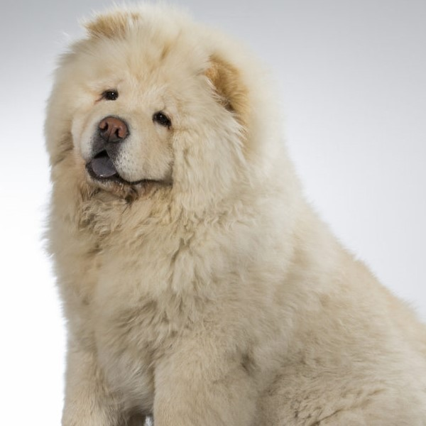

Csau Csau
Aranybarna bunda, pompás sörény, masszív felépítés – a Csau Csau megjelenése nagyon megnyerő. Ez az őskori kutyafajta, amely a legidősebb fajták egyike, nem csak pompásan néz ki, hanem nagyon különleges karakterrel is rendelkezik: egyesek úgy tartják, hogy a Chow Chow akaratossága miatt inkább macskának mondható, mint kutyának. Akik már kötöttek barátságot egy Chau Chau-val, azok tudják, hogy nem csak külsejében, hanem szívében is egy oroszlán.
Felséges megjelenés
Kínában ezt a fajtát „bolyhos oroszlánkutyának” , „medvekutyának” és „kék nyelvnek” is nevezik. Ezek a nevek mind a kutya feltűnő külsejére vonatkoznak. A chow chow az ázsiai spiccek csoportjába tartozik. Nagyon masszív a testfelépítése, max. 56 cm a marmagassága és körülbelül 30 kg-ot nyom. Léteznek rövid- és hosszúszőrű Csau Csauk is, de a rövidszőrűeknek is nagyon pihe-puha bundájuk van. Ám a rövidszőrű „smooth Csau” sokkal kevésbé elterjedt, mint a hosszúszőrű variáns. A hosszú szőr alatt dús aljszőrzet található és az állat buja sörényt visel. Ez az oroszlán-look nagyon tipukus a csau csaunál. Az impozáns bunda mindig egyszínű, de a hason és a combok belső részén megengedett a kicsivel világosabb szőr. A megengedett színek a fekete, a vörös, a kék, az őzborjú, a krém és a fehér szín. A széles, lapos fülek meredezve állnak, a kutya a farkát a háta felé tekeredve hordja.
A chau chau nagy különlegességét és egyedi vonását akkor vesszük észre, ha a kutya szája nyitva van: a nyelv, az íny és az ajkak kékek. Amíg ez más fajtánál gondot jelentene, – a kék nyelv és szájnyálkahártyák oxigénhiányra utalnak – addig a csau csaunál a standard része és semmilyen egészségügyi gondra nem utal. A száj belsejének kék színére egyelőre semmilyen tudományos magyarázat nincs, de több legenda is magyarázatot ad rá: a világegyetem és a csillagok megteremtésekor kék darabkák potyogtak le az égből, amelyet a chow chow nyalhatott fel. Kevésbé mitológiai megközelítés szerint pedig a vérkeringéshez vagy a hőmérsékletszabályozáshoz van köze.
A csau csau története: ősrégi kutyafajta sokrétű alkalmazása
A fajta Kínából származik, de szibériai ősei vannak. Ez a kutyafajta több mint ezer éves: a chow chow a legősibb kutyafajtákhoz tartozik, amelyek génkészlete erősen különbözik a többi mai fajtáétól. Valószínűsíthető, hogy a chau chau-nak a fo-kutya szobrokra is nagy hatása volt, amelyek sok reprezentatív kínai épület előtt állnak, csak úgy, mint Európában az oroszlánszobrok. Az ókorban a csau csauk valójában templomőrző kutyák voltak, Kínában, Mongóliában és Tibetben használták őket. Később vadászkutyaként vagy privát őrzőkutyaként is alkalmazták, így egyre inkább elterjedt a nép körében. Egyes példányok hosszú időn át a császári udvar státuszszimbólumai voltak. Mindenestre a chau chau-k elfogyasztása sem volt tiltott, ilyenkor a bundáját is hasznosították.
A fajta a 19. században érkezett meg Európába. Nagy-Britanniában az első chow chow-kat nem a szomszéd díványán, hanem az állatkertben lehetett megcsodálni, ahol nagy népszerűségnek örvendett.
1865-ben Viktória királynő egy ilyen feltűnő kutyát kapott ajándékba Kínából, ez pedig még nagyobb érdeklődést keltett a nép körében a csau csauk iránt, sokan háziállatként szerették volna tartani az oroszlánkutyát. A fajta kedvelői 1895-ben alapították meg az első csau csau egyesületet, majd 10 évvel később az USA-ban is megalapították a Chow Chow Club-ot. A „plüsskutyák” a legtöbb kutyabarát számára még mindig megfizethetetlenek voltak és a nyugati világban státuszszimbólummá vált. Még a fehér házban is élt két csau csau: Calvin Coolidge (1923-1929) elnök Tiny Tim-nek és Blackberry-nek nevezte saját kutyáit.
Manapság már nemigen élnek csau csauk Kínában, hanem inkább Európában és Észak-Amerikában, ahol a fajta a 80-as években a legnépszerűbb kutyafajták egyike volt. A szokatlan név eredete nem tisztázott – több teória is létezik. Az egyik szerint, a név a kínai „Gou” szóból ered, ami annyit tesz „kutya”. Egy másik magyarázat szerint a szó eredete a pidzsin-angol egyik szavának változata: a chow-chow csemegét jelent. A mai amerikai angolban a chow „eledelt” jelent. Így a megnevezés még ma is azokra az – szerencsére elmúlt - időkre emlékeztet, amikor a csau csau még csemege gyanánt szolgált…
A csau csau természete: karakteres kutya oroszlánszívvel
Gyakran mondják, hogy a chow chow inkább egy macska természetével rendelkezik: „Aki őt tartja, még koránt sem birtokolja”. De mit jelent ez pontosan? Ezek a négylábúak nemigen engedelmesek vagy behunyászkodóak, viszont nagyon keményfejűek. Idegenekkel és más kutyákkal inkább tartózkodóak. Ha pedig idegenek tartózkodnak a territóriumán, akkor kifejezetten csúnyán tud viselkedni. Az idegenekkel szemben tanúsított territoriális viselkedés miatt a chau chau nagyon jó őrző-védőkutya. Ha a nevelése nem volt megfelelő, akkor a csau csau más kutyákkal való találkozásnál hajlamos lehet a túlzott agresszióra. Különösen az azonos nemű kutyák találkozása lehet problémás, különösen akkor, ha más csau csaukról van szó. Legyen elővigyázatos, ha egy kisebb kutyát mutat be az oroszlánkutyának, mert a kistermetű kutyák könnyen felébreszhetik a chow chow vadászösztönét. A korai szocializáció tehát elengedhetetlen. Az oroszlánkutya egyébként egy nagyon kényelmes állat, amely nyugalmat és békét sugároz. A chau chau szabadon engedése a vadászösztön miatt nem minden példánynál lehetséges. Ezt tovább indokolja az a tény, hogy nem mindig hallgat gazdája hívó szavára.